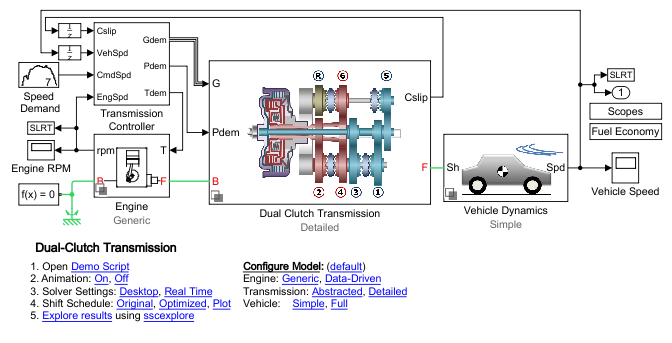
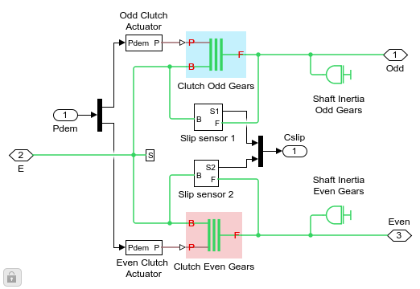

Generated by the Simulink Report Generator
List of Figures
- 1.1. Engine RPM
- 1.2. Vehicle Speed
- 1.3. Engine RPM
- 1.4. Vehicle Speed
List of Tables
- 2.1. Simulation Time
Table of Contents
% Select DCT Configuration DCT_Configuration = char(DCT_Config_Set_RPT{DCT_Config_Set_RPT_i}); set_param([mdl '/Dual Clutch Transmission'],'OverrideUsingVariant','Detailed'); set_param([mdl '/Vehicle Dynamics'],'OverrideUsingVariant','Simple'); Dual_Clutch_Trans_setsolver(mdl,'Desktop'); Dual_Clutch_Trans_tictoc('on'); open_system([mdl '/Vehicle Speed']); open_system([mdl '/Engine RPM']);
Model Screenshot


DCT Mode Logic